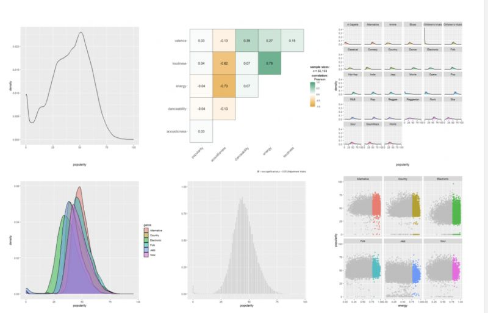

A Journey into Data Visualization: From ggplot2 Techniques to Visual Design
30 Days of ggplot2 — From Plotting to Visual Thinking

🎯 ggplot2 & Data Visualization Design
Based on “Data Visualization in R Using ggplot2 & Friends” by Statistics Globe / Joachim Schork and “Fundamentals of Data Visualization” by Claus O. Wilke,
I embarked on a 30-day data visualization challenge — a journey that gradually shifted my focus from technical plotting to visual thinking.
This challenge was part of the 2025 iThome Ironman Competition in Taiwan,
where participants commit to publishing one IT-related article every day for 30 consecutive days.
You can view my full series here: iThome Ironman Challenge – 30 Days of ggplot2.
My process followed a simple rhythm:
read → practice → share
This rhythm turned out to be one of the most effective ways to internalize new skills and transform passive knowledge into creative output. Every day, I learned something new about how data could be shaped, expressed, and communicated visually.
🧩 The Grammar of Graphics Mindset
At its core, ggplot2 embodies the Grammar of Graphics — a philosophy of building visualizations through syntax, layer by layer.
It reminds me of SAS PROC SGPLOT and TEMPLATE:
both rely on layered composition, where each layer is independent yet harmonized.
Connecting data to visuals is not merely about stacking code —
it’s about understanding how data structure meets visual semantics.
Through exploring the philosophy of aes() and the logic behind each geom_xx() layer,
I came to realize that data visualization is not just a skill — it’s a way of thinking.
Throughout the series, I used real-world open datasets — from Taiwan’s energy, postal, and demographic data, to built-in R datasets — making each example grounded, contextual, and relatable.
🌈 Extensions and ggplot2 4.0.0 Highlights
Beyond the classic chart types (scatter, density, boxplot, heatmap, line chart, etc.),
I explored several extensions that greatly expand ggplot2’s expressive power:
- ggrepel — for non-overlapping labels
- ggpointdensity — for high-density scatter plots
- ggstatsplot — for integrated statistical testing
- patchwork — for elegant multi-plot layouts
One major highlight during the challenge was the release of ggplot2 4.0.0,
which marked a significant evolution in the package’s design and structure.
Here are some key updates from the official announcement:
1️⃣ Transition from S3 to S7 object system — offering stricter type validation and more flexibility for developers.
2️⃣ Theme system overhaul — introducing ink/paper/accent logic and new helpers like theme_sub_axis().
3️⃣ Integration of palettes and scales into themes — ensuring consistent and harmonious visual design across plots.
These updates reflect how ggplot2 continues to balance stability and innovation, remaining one of the most elegant tools in the R ecosystem.
🎨 Balancing Color and Design
As Cara Thompson mentioned at Shiny in Production 2023,
the goal of visualization isn’t simply to make it pretty, but to make it instantly understandable.
Color choices, typography, and text hierarchy all serve a purpose —
to guide the reader’s eye, emphasize the story, and support comprehension.
Clarity is not a constraint — it’s an act of design.
Throughout this challenge, I found myself constantly adjusting palettes and contrasts,
balancing scientific precision with aesthetic intuition.
✨ Personal Reflection
This 30-day journey reminded me that data visualization lives at the intersection of science and art.
Accuracy ensures integrity, but aesthetics guide attention and memory.
A great visualization doesn’t just display information —
it tells a story, connects people, and makes insights memorable.
Finally, I want to express my gratitude to the R community, the iThome Ironman platform,
and all mentors who make learning, sharing, and creating so much more accessible and inspiring.
Their openness is what makes this journey truly rewarding.
_“Data visualization is not the end of analysis — it’s the beginning of understanding.”